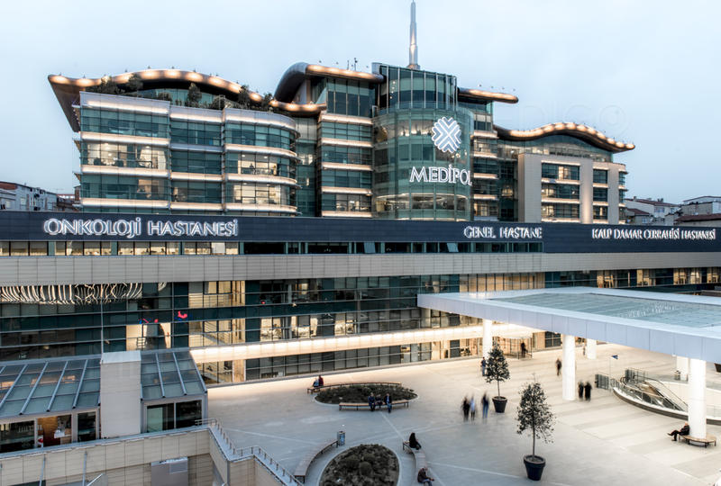

Медипол е најголемиот болнички центар во Истанбул. Има повеќе оддели исто така и онкологија. Медипол е првата универзитетска болница призната и од акредитациониот систем ЈСИ. Во оваа болница се применуваат најсовремените техники при лекувањето:TeamBeam, Gama Knife, Davinci...
Болницата се состои од 515 болнички легла, 25 операциони сали, 133 легла за интензивно лечење. Медипол има договори за лекување на пациенти склучени со Министерството за здравство од Македонија, Романија, Ирак и Либија.
